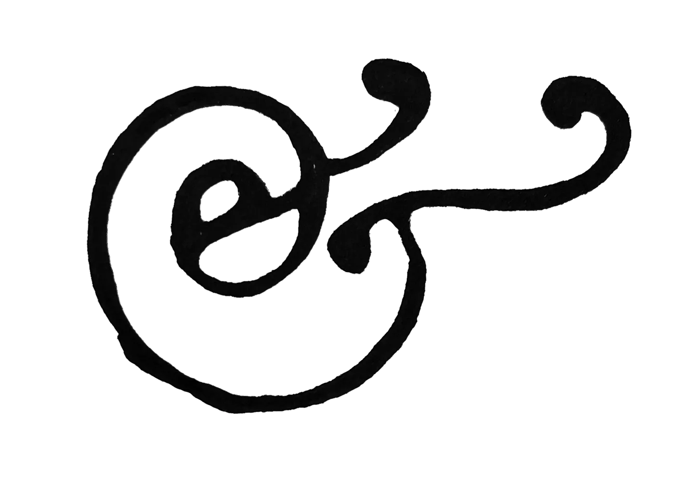

Agnese Pozzobon
(1999) is a visual and graphic designer currently based in Milan. Her work focuses on printed matter, data design and the construction of identities. She is interested in how design can shape information – and how information, in turn, can shape design.
Education
MA, Communication and Design for Publishing, ISIA Urbino, 2022/2025
After Effects course, CFP Bauer Milan, 2022
BA, Graphic and Multimedia Communication, IUSVE Venice, 2018/2021
After Effects course, CFP Bauer Milan, 2022
BA, Graphic and Multimedia Communication, IUSVE Venice, 2018/2021
Work
radio spugna B2B workshop, ISIA Urbino, 2025
Graphic Designer Internship at Matter Of Studio, Stuttgart, 2024/2025
Graphic Design and Research for TIPS, University of Padova, from 2024
Editorial Design for Pratiche di Posizionamento, Corraini Edizioni, 2024
Assistant curator, Museum of Contemporary Art M9, Venice, 2021
Graphic Designer Internship at Twin Studio, Milan, 2021
Graphic Designer Internship at Matter Of Studio, Stuttgart, 2024/2025
Graphic Design and Research for TIPS, University of Padova, from 2024
Editorial Design for Pratiche di Posizionamento, Corraini Edizioni, 2024
Assistant curator, Museum of Contemporary Art M9, Venice, 2021
Graphic Designer Internship at Twin Studio, Milan, 2021
Extra
Summer After School, residency, Jim Fontana Studio
Music to My Eyes, workshop, April Greiman
Bottomless Pit, workshop, Noemi Vola + Omar Cheikh
A.I. – blessing or curse for Graphic Design?, workshop, Laurenz Brunner
image / icon / symbol / script, workshop, Paul McNeil
Valtellina terre alte, workshop, Beniamino Pisati
Storie e immaginari, workshop, Lorenzo Cicconi Massi + Lorenzo Zoppolato
Quando la luce diventa emozione, workshop, CSC Roma, Giuseppe Lanci
Music to My Eyes, workshop, April Greiman
Bottomless Pit, workshop, Noemi Vola + Omar Cheikh
A.I. – blessing or curse for Graphic Design?, workshop, Laurenz Brunner
image / icon / symbol / script, workshop, Paul McNeil
Valtellina terre alte, workshop, Beniamino Pisati
Storie e immaginari, workshop, Lorenzo Cicconi Massi + Lorenzo Zoppolato
Quando la luce diventa emozione, workshop, CSC Roma, Giuseppe Lanci
Independent projects
www.radiospugna.com
